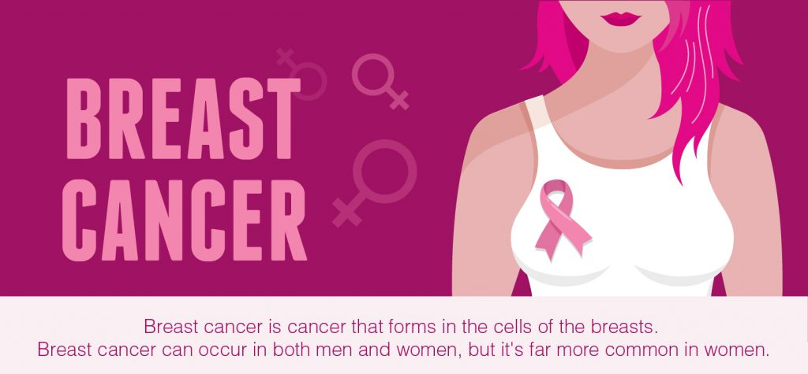

This is an AI-driven system designed to enhance information retrieval in cybersecurity domains by expanding search queries and reranking retrieved results. The system uses OpenAI's GPT-4 API integrated with LangChain to intelligently rephrase user queries and reorder search results based on relevance. This project includes modules for query expansion, self-querying, and passage reranking, all powered by custom prompt templates. It improves the accuracy and relevance of search results for complex queries, making it ideal for large-scale document searches or research tasks in cybersecurity.
Watch the full demonstration here: CyberDomain App demonstration. Check out the app here
The BankVista Chatbot is a conversational AI solution designed to streamline banking tasks with ease. This chatbot allows users to access account information, perform transactions, get updates on banking news, and receive customer support—all through an intuitive and user-friendly interface. It provides a secure and personalized banking experience while simulating real-world banking interactions in a controlled environment.
Watch the full demonstration here: BankVista-Chatbot demonstration
A machine learning project to classify and diagnose tomato plant diseases using image data, leveraging deep learning techniques to improve agricultural productivity and plant health monitoring.
FoodChatBot is an intelligent chatbot designed to streamline the food ordering process. Built with Dialogflow, Python, and a MySQL database, it allows users to place and manage orders, track order statuses, and modify their order lists efficiently.
Watch the full demonstration here: FoodChatBot demonstration.
Developed a YouTube Assistant application using Streamlit and OpenAI. This app processes YouTube video transcripts and answers user queries based on the video's content. It employs the langchain library for document loading and text splitting, and FAISS for vector database creation and similarity search. The app ensures accurate and detailed responses by leveraging OpenAI embeddings and LLMs.
Check out the app here

RockyBot is a Streamlit application designed to help users research news articles efficiently. By inputting URLs of news articles, users can process and analyze the content to generate accurate responses to their questions about the articles. The app uses OpenAI's language model and a FAISS vector database to provide relevant answers and cite sources from the articles. It features a user-friendly interface that allows users to input URLs, process them, and ask questions about the content, with responses and sources displayed clearly.
Check out the app RockyBot: News Research Tool

Developed a Q&A system for querying a T-shirt inventory database using Google Generative AI, SQLDatabase, and LangChain libraries. This project leverages semantic similarity for selecting examples and uses HuggingFace embeddings for text vectorization. Users can input natural language questions and receive SQL-based answers about the inventory, such as stock quantities and revenue calculations. The system is integrated with Streamlit for an interactive web-based interface.
Watch the full demonstration here: AtliQ demonstration.
Implemented a Natural Language Processing (NLP) pipeline for binary sentiment classification of IMDb movie reviews. Using Gensim for text vectorization and models such as Random Forest and Gradient Boosting, achieved perfect scores in precision, recall, and F1-score. Demonstrates proficiency in NLP techniques, machine learning, and Python within a Jupyter Notebook environment.
This project classifies an image input of the MNIST dataset and predicts the number displayed on the image.
This project is focused on using predictive models to increase employee retention rate at Salifort Motors. The model uses features to identify the cause of high attrition rates, helping the company adjust activities responsible for high employee turnover.

I created a fraud detection tool for an e-commerce company using logistic regression, random forest, and decision tree models, achieving 89% accuracy in identifying high-risk transactions based on user and transaction data patterns.

This project compares the performance of VGG16 and RESNET50 models in identifying cracks in concrete surfaces. Utilizing a dataset of concrete images labeled as cracked or non-cracked, the models are trained and fine-tuned using Keras. Through evaluation metrics like accuracy and F1-score, we aim to determine the most effective model for this classification task. You can download the dataset here.
This project showcases the power of multi-dimensional KMeans clustering in revealing business trends through comprehensive analysis of customer behavior. By incorporating variables such as age, gender, annual income, and spending score, KMeans clustering identifies distinct customer segments, offering actionable insights for strategic decision-making. Through data-driven approaches and insightful visualizations, businesses can optimize marketing strategies, enhance customer satisfaction, and drive growth in a competitive market landscape.

This project uses SVM with RBF kernel to predict Breast cancer diagnosis from tumor characteristics. It preprocesses data, selects relevant features, trains the model, evaluates its performance, and makes predictions. The aim is to assist healthcare professionals in early cancer detection and patient management.
This project analyzes the trends and forecasts of electric vehicle (EV) registrations in the United States. By examining historical data and projecting future trends, it aims to provide insights into the growing popularity of EVs and their implications for businesses and investors in the electric mobility sector.

This project utilizes Convolutional Neural Networks (CNNs) in PyTorch to predict individuals' ages from images. Despite achieving an accuracy of 0.33, the model's performance could benefit from a larger and more diverse dataset.
This project utilizes Convolutional Neural Networks (CNNs) in PyTorch to predict individuals' ages from images. Despite achieving an accuracy of 0.33, the model's performance could benefit from a larger and more diverse dataset.
This project utilizes the Histogram Oriented Gradient (HOG) technique with a Support Vector Machine (SVM) to predict the age of individuals in images. Despite achieving a modest accuracy, the model's performance may improve with a larger dataset.

Data Exploration of Cyclistic Company Database using SQL: Enhancing Annual Membership Optimization and Discerning User Behavioral Disparities.

Exploration of Tableau as an Exceptional Visualization Tool to Uncover Insights from Cyclistic Company Data
Bellabeat Dataset prepared, cleaned, analyzed, and visualized using R Programming in RStudio